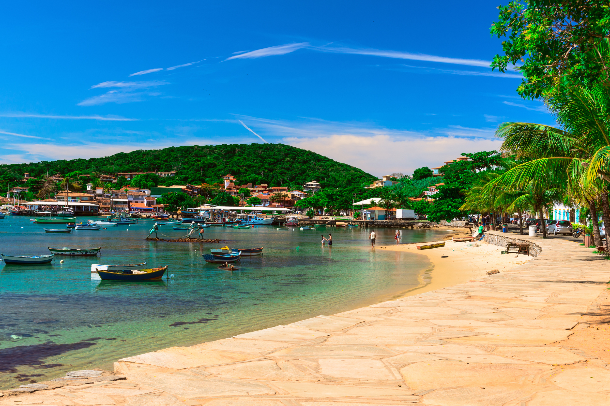
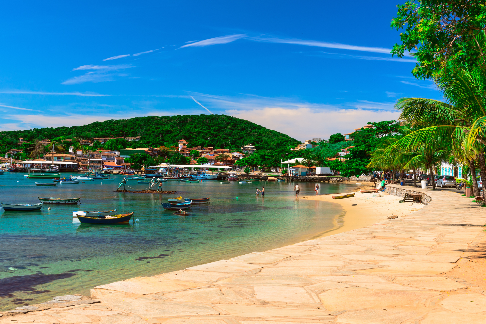

Búzios es un destino costero del estado de Río de Janeiro, situado en una pintoresca península a unas 2-3 horas en auto desde la ciudad de Río. Esta antigua aldea de pescadores cuenta con 23 playas de aguas cristalinas, cada una con un ambiente único: algunas son calas protegidas de aguas calmas (por ejemplo, Ferradura, ideal para nadar) y otras son amplias extensiones abiertas al océano, perfectas para surfear o ver el atardecer (como Geribá, extensa y concurrida). El centro de Búzios conserva su encanto de pueblo costero, con construcciones bajas (ninguna supera los dos pisos), calles empedradas y casas de estilo rústico. Destaca la Rua das Pedras, una calle peatonal con tiendas, restaurantes y bares junto al mar. La geografía y los vientos constantes le otorgan a Búzios un microclima muy soleado: incluso cuando en Río llueve, suele estar despejado aquí.
La mejor época para visitar Búzios es entre diciembre y marzo, cuando el clima es cálido y seco. Sin embargo, si prefieres evitar las multitudes, puedes optar por los meses de abril a noviembre, cuando la temperatura sigue siendo agradable y hay menos turistas.
La fama internacional de Búzios comenzó con la visita de la actriz francesa Brigitte Bardot en 1964. Gracias a ese suceso mediático, la aldea se transformó en un refugio vacacional elegante; de hecho hoy una costanera del centro lleva el nombre de “Orla Bardot” con una estatua en su honor. A pesar del desarrollo turístico, Búzios ha mantenido un ambiente pintoresco y relajado. Por su atmósfera cosmopolita y sus playas refinadas se la suele comparar con destinos mediterráneos de lujo (la llaman la «Saint-Tropez brasileña»).